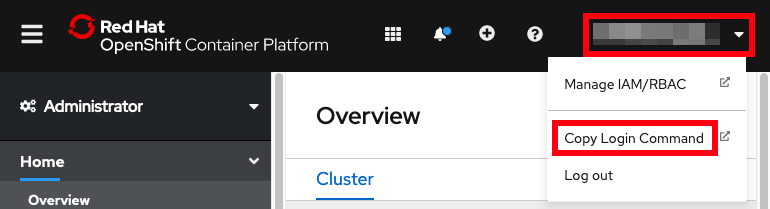

Accessing OpenShift through the command line
-
Download the OpenShift terminal client (
ocexecutable) to your workstation. Note: Some commands require a recent version ofocso re-download if you have an old version.- Windows
- Linux
-
- On macOS, you may need to remove the download quarantine before extracting the file. Open
Terminal, change directory to where you downloaded the file and run:xattr -d com.apple.quarantine openshift*
- On macOS, you may need to remove the download quarantine before extracting the file. Open
-
- On macOS, you may need to remove the download quarantine before extracting the file. Open
Terminal, change directory to where you downloaded the file and run:xattr -d com.apple.quarantine openshift*
- On macOS, you may need to remove the download quarantine before extracting the file. Open
-
Unzip/extract the
openshift-client-*download into some directory - Open a
TerminalorCommand Promptapplication and change directory to where you expanded theopenshift-client-*download -
Add this directory to your
PATHby replacing$OCDIRwith this directory:-
macOS/Linux:
export PATH=$OCDIR:$PATHFor example:
export PATH=${HOME}/Downloads/openshift-client-mac/:$PATH -
Windows Command Prompt:
set PATH=$OCDIR;%PATH%For example:
set PATH=%HOMEPATH%\Downloads\openshift-client-windows\;%PATH% -
Windows Cygwin terminal:
export PATH=$OCDIR:$PATHFor example:
export PATH=${HOMEPATH}/Downloads/openshift-client-windows/:$PATH
-
-
Open your browser to the OpenShift web console at https://console-openshift-console.$CLUSTER_DOMAIN_NAME/
- In the top right, click on your name } Copy Login Command } Log-in again } Display Token } Copy the
oc logincommand
 - Paste and run the
oc logincommand in theTerminalorCommand Promptopened in step 3 above.- See the Frequently Asked Questions (FAQ) for common login errors.
- Run
oc whoamito confirm everything works. - If you have been provided a namespace that you should use, then set your current namespace, replacing
$NAMESPACEin the following command:oc config set-context --current --namespace $NAMESPACE